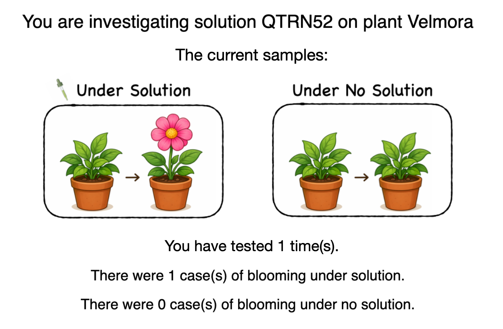
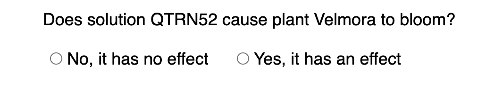
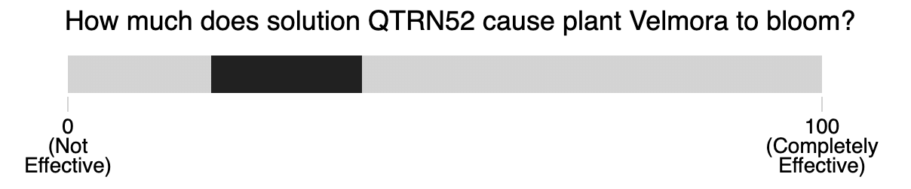
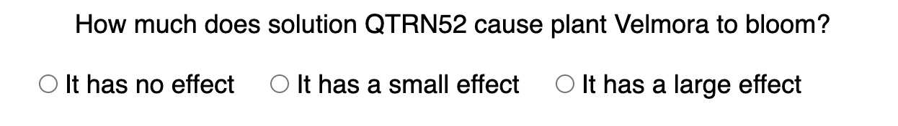
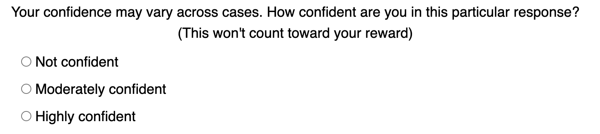
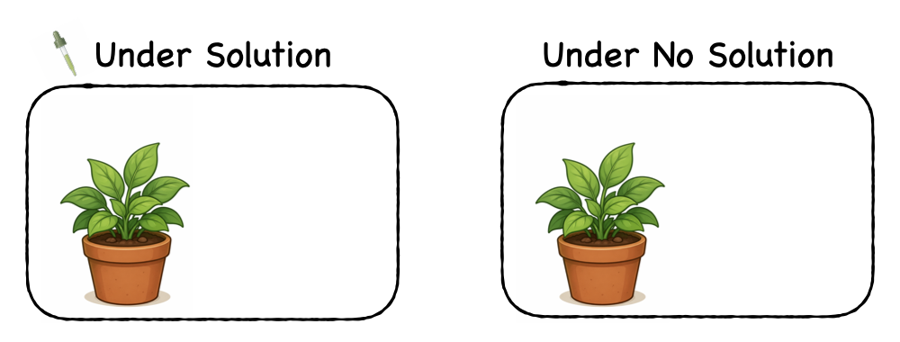

Sorry, you appear to have participated in this or a very similar task before! Unfortunately, this means you will not be able to participate in this one. Please return the task so someone else can do it.
Sorry, it fails to connect to the database under your network, which means we might not be able to receive you data (there could be many reasons including our database or the interaction between your network and the database). Please return the task or reload the page later. Thank you very much!!
Please enter your Prolific ID here
Thank you for participating in this study!
Please read the instructions very carefully! You will have to pass a test on your understanding before you can start the experiment.
Please do not change the zoom level during the experiment. The experiment may only work properly if you have your browser zoom level on 100% throughout.(You can change the zoom level to 100% by pressing "cmd+zero" on a mac or "ctrl+zero" on a PC.)
Please do not refresh this page during the experiment.
In this task, you will play a game to investigate the causal relationship between treatment solutions 🧪 and plant blooming 🪴.
The first part of the task will have 36 trials. In each trial, you will be asked to judge how effectively a completely new solution (e.g., QTRN52) promotes the blooming of a completely new species of plant (e.g., Velmora — a fictitious name). All solutions have been pre-tested to ensure that they do not prevent any plants from blooming.
You can gather information by clicking the “Test” button. Each time you click “Test”, you will observe a pair of two plants: one that has received the treatment and one that has not. This allows you to compare outcomes under treatment and no treatment. In each trial, you can test up to 30 times.

Plants may bloom on their own even without any treatment, and the probability of self-blooming varies across different plant species. Meanwhile, even an effective treatment may not guarantee blooming every time. Therefore, it is important to consider both treated and untreated cases when making your judgment.



If your answer is correct, you will receive a bonus of £1, minus £0.01 for each time you click “Test”. If your answer is incorrect, you will not receive any bonus. The final bonus will be determined by randomly selecting one of the 36 trials.
You will then be asked how confident you are in your response. This will not affect your reward, so please try to rate your confidence as accurately as possible. Please avoid always choosing the same one or two confidence levels. Use three of them:

There is also a second part of the task that is similar to the first part, but we estimate it to take less time. Instructions will appear after you finish the first part.
To make sure you understand the instructions, now please indicate whether each of the following statements is true or false. The following explanation is just to make sure you can fully understand the verbs.
Well done, you got all the questions correct!
Unfortunately, you didn't answer all of the comprehension check questions correctly.
Please have another close look at the instructions and work out whether those statements are correct or false.
Well done for 36 trials! The final part of this task would ask you to review some samples you have collected and have another way to make judgments. We will provide screenshots of your samples.

0
(Not Effective)
100
(Completely Effective)
Well done! You have finished the main task!
Feedback on one or some of the following questions: How did you work out the answers? What did you find particularly easy/hard? Did you have a strategy, if so what was it? Did you spot any bugs or errors? (optional)
Please answer the following questions about yourself to complete the experiment:
1. Age *: years
2. Gender *:
Thank you very much!! Data have been saved.
Click here to redirect to Prolific."
Sorry, it seems that your network cannot connect to our database successfully. You need to upload the data manually.
Step 1:
Click here to save your data (Inference.json) to your computer (you might need to wait a few seconds after clicking).
(Json is a common and safe file type developed under web languages. It is used to save data just like txt,csv. It can help us to merge your data with other participants later easily.)
Step 2:
Upload the file via this goolge form.
If you prefer not to sign in a google account, you can also email the file directly to gongtiw@gmail.com